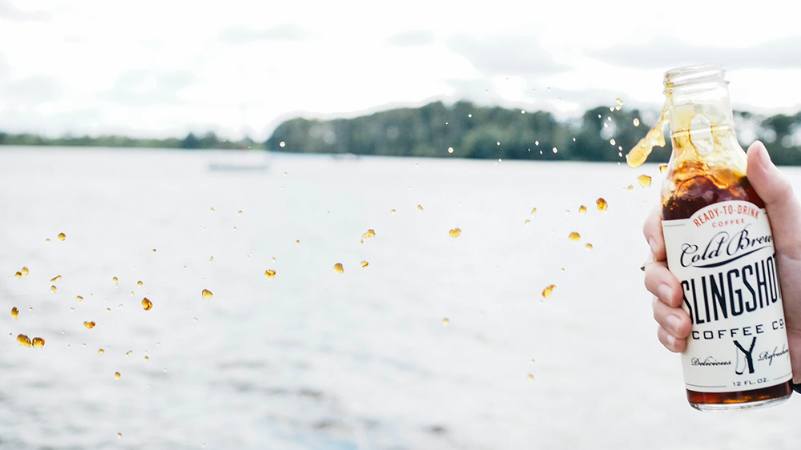

Cold brewing, also called cold water extraction or cold pressing, is the process of steeping coffee grounds in water at cool temperatures for an extended period. Coarse-ground beans are soaked in water for a prolonged period of time, usually 12 hours or more. The water is normally kept at room temperature, but chilled water is also used.

The grounds are filtered out of the water after they have been steeped using a paper coffee filter, a fine metal sieve, a French press, or felt, in the case of the "Toddy" brewing system. The result is a coffee concentrate that is often diluted with water or milk, and is served hot, over ice, or blended with ice and other ingredients such as chocolate. Slow-drip cold brew, also known as Kyoto-style, or as Dutch coffee in East Asia, refers to a process in which water is dripped through coffee grounds at room temperature over the course of many hours.
Because the ground coffee beans in cold-brewed coffee never come into contact with heated water, the process of leaching flavor from the beans produces a chemical profile different from conventional brewing methods.
Coffee beans contain a number of constituent parts that are more soluble at higher temperatures, such as caffeine, oils and fatty acids. Brewing at a lower temperature results in lower acidity and lower caffeine content when brewed in equal volume.
“Carbonated soft drinks and energy drinks are on the decline, and cold brew not only tastes great but also sits at the confluence of so many macro trends,” says Hugh Duffie, cofounder of Sandows, a London-based bottled cold brew company.
Moka coffee is coffee brewed with a moka pot, a stovetop coffee maker which produces coffee by passing hot water pressurized by steam through ground coffee at a lower pressure than an espresso maker. The moka pot is an Italian invention, first produced by Bialetti in the early 1930s. The flavor of moka pot coffee depends greatly on bean variety, roast level, fineness of grind, and the level of heat used. Due to the higher-than-atmospheric pressure involved, the mixture of water and steam reaches temperatures well above 100 °C, causing a more efficient extraction of caffeine and flavors from the grounds, and resulting in a stronger brew than that obtained by drip brewing.
A vacuum coffee maker brews coffee using two chambers where vapor pressure and vacuum produce coffee. This type of coffee maker is also known as vac pot, siphon or syphon coffee maker, and was invented by Loeff of Berlin in the 1830s. These devices have since been used for more than a century in many parts of the world and more recently have been given a new use by molecular mixologists and chefs to make hot cocktails and broths.
A coffee percolator is a type of pot used to brew coffee by continually cycling the boiling or nearly-boiling brew through the grounds using gravity until the required strength is reached. There are stove-top percolators and standalone units which contain a built-in heating element. Percolators were popular until the 1970s, when they were widely replaced by drip coffee makers. By the mid-1970s, many companies ceased production of percolators. In the 2000s, old 1970s-era percolators can occasionally still be seen at church functions and community events.
Going deep into Cold Brew
The offerings at the typical espresso bar are generally quite Italianate in inspiration; biscotti, cannoli and pizzelle are a common traditional accompaniment to a caffe latte or cappuccino. Some upscale espresso bars even offer alcoholic beverages such as grappa and sambuca. Nevertheless, typical pastries are not always strictly Italianate and common additions include scones, muffins, croissants, and even doughnuts. There is usually a large selection of teas as well, and the North American espresso bar culture is responsible for the popularization of the Indian spiced tea drink masala chai. Iced drinks are also popular in some countries, including both iced tea and iced coffee as well as blended drinks such as Starbucks' Frappucino.

To bottle or not to bottle?
In Malaysia and Singapore, traditional breakfast and coffee shops are called kopi tiam. The word is a portmanteau of the Malay word for coffee (as borrowed and altered from English) and the Hokkien dialect word for shop (店; POJ: tiàm). Menus typically feature simple offerings: a variety of foods based on egg, toast, and coconut jam, plus coffee, tea, and Milo, a malted chocolate drink which is extremely popular in Southeast Asia and Australasia, particularly Singapore and Malaysia.
In India, coffee culture has expanded in the past twenty years. Chains like Indian Coffee House, Café Coffee Day, Barista Lavazza have become very popular. Cafes are considered good venues to conduct office meetings and for friends to meet.[43]
The origin of the recipe as we know it today dates back to the 1940s, when it was prepared by Pedro Conesa Ortega in his bar at Albujón in Cartagena, the "Pedrín" bar. The drink however was already known before, with different variations, by the fishermen of Cartagena, who used to carry with them poor quality coffee (known as " recuelo"), brandy and milk, which helped them keep warm and clear during the fishing time. At the beginning the drink was called "Ruso" (Russian), although its name was replaced by the current, "Asiático" (Asian), due to the political connotations for the first one in a time in Spain when the word was associated with the old Russia from the Soviet Union. At present the City Council seeks to promote the drink as a symbol of the city in order to exploit it as a typical item for tourists, for which information campaigns are conducted within the local businesses.
Singapore also has coffee shops known as cafes and in the past few years, there has a been a rise in cafe culture with urbanites seeking out specialty coffees. Even with popular joints such as Starbucks and Coffee Bean, the millennials in particular sought for gourmet coffees as well as the relaxing and cosy ambience amidst the hustle and bustle of the city. Moreover, cafes have also changed the social scenes of Singapore. Instead of crowding at shopping malls, the youngsters could now hang out at cafes.